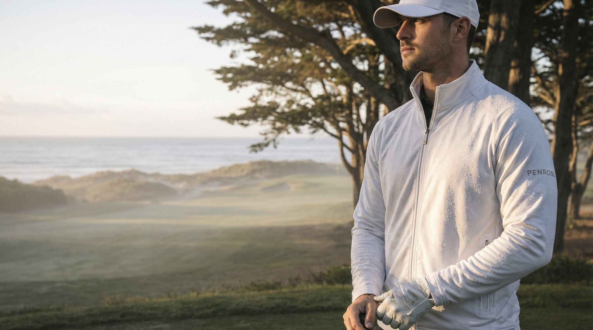
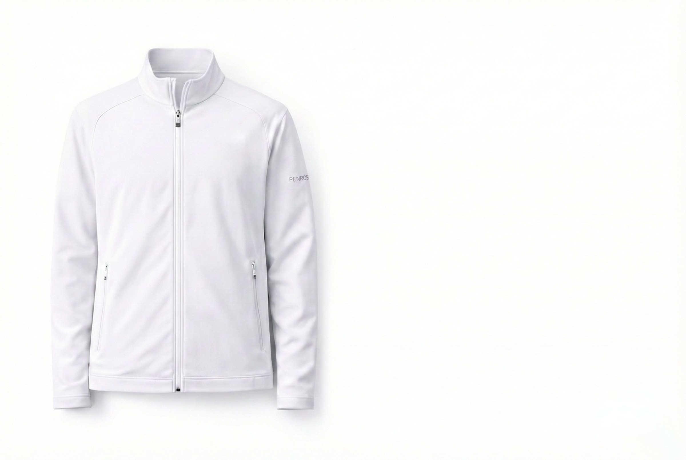

The First Edition
Opening March 2027
Colorway


I The Performance Polo
II The Tailored Performance Trouser
III The Penrose Cap
I · The Performance Polo
Performance, without the performance uniform.
A polo shaped with restraint. Made to move through the round and remain appropriate in the room that follows.
Available in True White and True Charcoal
Invisible at three feet. Discovered at close range.
The mark lives where it is found — not announced.
II · The Tailored Performance Trouser
A clean line, from the first tee to lunch.
Coordinated with the polo and the cap. A single silhouette across the day.
Available in True White and True Charcoal
III · The Penrose Cap
Understated. Tonal. Considered.
The mark lives where it is found — a quiet finish to the wardrobe.
Available in True White and True Charcoal

IV · The Quarter-Zip
Protection without interruption.
A layer designed for changing conditions and the hours beyond them.
Available in True White

Opening March 2027
The First Edition arrives March 2027.
Join the private list for collection previews, release details, and first access.